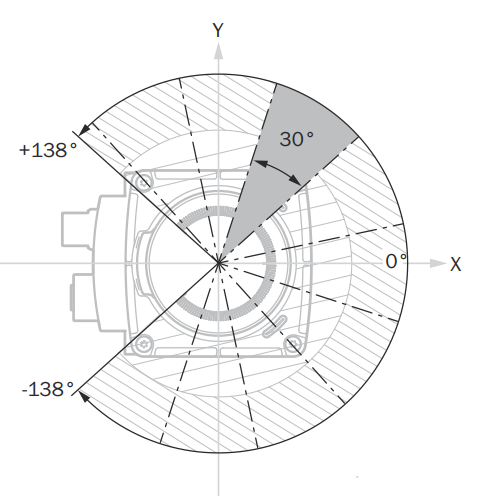

Compact Format¶
The measurement data are transmitted segment by segment, i.e., each transmitted data package contains a segment (cf. the Segmented data output section in the operating instructions). Each segment can be interpreted separately, i.e., it is not necessary to collect all segments in a frame (=all measurement data recorded in one revolution) to start processing. This makes it possible to reduce the latency between the generation of the measurement data and the processing of that data on the client side.
In the Compact format, the measurement data of the sensor are represented as compactly as possible. The individual fields are not self-describing, but only a string of bytes is transmitted. The structure of the transmitted data package must be known to the user in advance. This has the advantage that as little bandwidth as possible is used on the data line and that a very efficient interpretation of the data is possible by copying the transmitted byte sequence into a structure using a single command (e.g., memcpy in the programming language C/C++).
This page covers the frame layout, the three payload types, and the details you need to get correct values. To inspect a captured Compact telegram field by field, paste it into the Kaitai Web IDE alongside the definition - a free, browser-based tool that needs no installation.
The Outer Frame¶
The authoritative Kaitai Struct definition is available as compact_frame.ksy on GitHub.
The telegram_type selects the payload parser: 1 for scan data, 2 for IMU data, and 4 for encoder data. Verify the CRC32 before processing the payload.
Type 1: Scan Data¶
The scan payload is a header followed by one or more modules. Each module covers a contiguous angular range and carries per-layer metadata plus the raw beam data for every point in that range.
The authoritative Type 1 primary-data definition is available as type_1_primary_data_spherical_coordinates.ksy on GitHub.
Read data_content_echos / data_content_beams before reading optional fields, since they guard which fields are present. The sensor also streams segmented frames (5 or 10 segments per full ~276° revolution depending on the performance profile); all segments of one scan share frame_number and differ by segment index. Collect every segment before processing a frame.
To convert a beam to a 3D point, use phi (elevation), theta (azimuth), and distance d:
The device generates 8-bit RSSI internally, then scales it depending on the output format:
| Format | Bit depth | Conversion |
|---|---|---|
| Compact Type 1 | 16-bit | 16bit = (8bit / 255) × 65535 |
| MSGPACK | 16-bit | 16bit = (8bit / 255) × 65535 |
LMDscandata (CoLa) |
8-bit | none; value 254 = reflector detected |
In 16-bit output the low byte equals the high byte (e.g. 0xe6e6); this is expected.
picoScan only: The product records data over a scan range of 276°. The data acquired during one 276° rotation of the scan layer is one scan. For output, a scan is divided into segments, each covering a smaller angular range.

Example of 30° scan segments within the 276° scan range.
The segment size depends on the scanning frequency:
- 30° at a scanning frequency of ≤ 25 Hz
- 60° at a scanning frequency of ≥ 30 Hz
The number of segments depends on the configured horizontal scan range:
- 276° at 25 Hz: 10 segments
- 276° at 40 Hz: 5 segments
- 180° (−90° to +90°) at 40 Hz: 4 segments
If the scan range is adjusted, the segment boundaries remain unchanged. In Compact format, measured values in hidden angle ranges are filled with zeros. If a complete segment is hidden, it is omitted from the output.
Type 2: IMU¶
A flat, fixed-size payload (no modules, no conditional fields) from the integrated Bosch BHI360. The authoritative definition is available as type_2_imu.ksy on GitHub.
Type 4: Encoder¶
Reports an external rotary encoder attached to a moving axis; emitted alongside each scan frame and linked by frame_number. See 3D point clouds for how to fuse it with scan data. Header fields mirror Type 1 (telegram_counter, timestamp_transmit, telegram_version, payload_length, sender_id) followed by the tick counter and reference tick.
The authoritative definition is available as type_4_encoder.ksy on GitHub.
Transport Options¶
Set with ScanDataEthSettings { Protocol, IPAddress, Port }:
UDP unicast (default) has the lowest overhead. UDP multicast uses the same API, but with a multicast group address; multiple hosts receive one stream. TCP: the device connects as a client to your configured endpoint; use it when UDP loss is a problem.
Transport Configuration¶
picoScan100 can transmit measurement data by UDP unicast, UDP multicast, or TCP. Choose the transport based on the number of receivers and the delivery guarantees your application requires.
| Transport | Connection | Delivery guarantee | Best for |
|---|---|---|---|
| UDP unicast | One sender to one receiver | None; packets can be lost or arrive out of order | Low-latency data to one host |
| UDP multicast | One sender to a receiver group | None; packets can be lost or arrive out of order | Efficiently distributing the same data to multiple hosts |
| TCP | One sender to one receiver | Ordered and error-checked delivery | Applications where data integrity is more important than latency |
UDP multicast transmits one Compact-format stream to every receiver that has joined the selected multicast group. The sensor sends only one copy of each packet, avoiding duplicated traffic from separate unicast streams.
In the sensor's data-output settings, select Compact as the format and set the measurement-data output IP address to a multicast address in the range 224.0.0.0 through 239.255.255.255. Configure every receiving host to join the same multicast group and listen on the configured UDP port.
Multicast is connectionless, so it does not guarantee delivery, ordering, or error recovery. Ensure that the network infrastructure permits multicast traffic and use appropriate multicast management when several receivers are connected.
For UDP unicast, select Compact and configure the measurement-data output IP address as the address of the single data receiver. This is suitable when the receiving application can tolerate occasional packet loss.
For TCP, select LMDscandata as the data format and configure the receiver endpoint. TCP establishes a connection and retransmits lost data, at the cost of connection-management overhead and potentially higher latency.
See CoLa / LMDscandata for the TCP telegram format.
Wireshark Dissector¶
SICK provides a Wireshark dissector for Compact measurement and IMU data, so you can inspect the stream field by field rather than interpreting raw bytes. It supports Compact format only. Use it to confirm framing, ports, CRCs, and decoded values before investigating an application parser.
Install The Dissector¶
Download Wireshark, install it, and open Help > About Wireshark > Folders. Copy the downloaded COMPACT_IMU_Dissector_V3_7.lua file to the displayed Personal Lua Plugins folder, then restart Wireshark.
Decode picoScan Data¶
Configure the sensor to output Compact format through UDP, then select the Ethernet interface connected to the sensor in Wireshark. Enter compact as the display filter. The Protocol column should show COMPACT; select a packet to inspect the decoded Compact structure and values such as distance.
On Windows, ensure the Ethernet network profile is set to Private so firewall rules do not block the received stream:
Replace 18 with the Ethernet interface index reported by Get-NetConnectionProfile.
To temporarily disable the plugin, choose Analyze > Enabled Protocols and clear its checkbox. See the telegram layout and Wireshark (.pcap) for recording traffic.